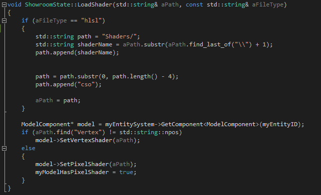

The Showroom was a requirement for all games during the last year. It was a place for us to examine all the assets created in the games. I decided that I did not have enough time to create an editor bridge to windows forms that would enable tools such as a drop down menu. Instead I resorted to a simple system of switching assets with the keys and using maya controls to move around the asset. I would load all the assets with the prefix .fbx in our assets folder when entering the showroom.
After the first project, I added support to drag and drop assets to display them instead, and I also added support to drop shaders in the window, allowing preview and modification of values to the shaders via the showroom. This would help the Technical Artists to directly preview shaders on models in our engine.
Here is a snippet of code from when I have dragged and dropped a shader that is either a .cso or .hlsl file. A message is sent from the WinProc function in Engine, telling me which shaders has been dropped in the window. I determine which shaders has been loaded and convert it into a .cso filepath if needed and load it. If it is a pixel shader, I also enable in the showroom that it is a pixel shader, which gives the option to modify values sent to the shader.
